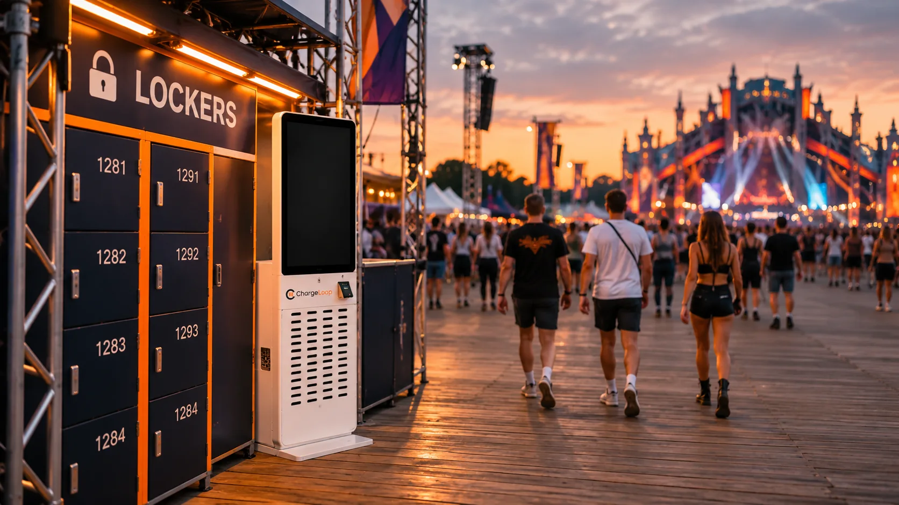
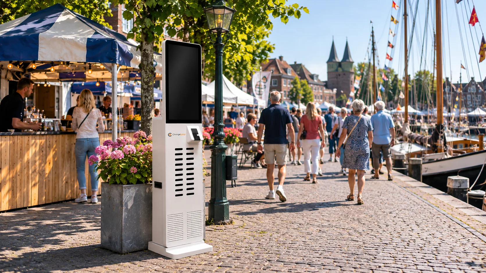

Wat is een ChargeLoop-station op een evenement?
Op je evenement staan ChargeLoop-stations waar bezoekers zelf een powerbank pakken. Pas of telefoon tegen het station, powerbank pakken en door. Zonder app, zonder account en zonder rij.
Wij denken mee over het aantal stations en de plek op het terrein, en we stemmen af hoe opbouw en beheer lopen.
- Stations met 24 en 48 slots voor grote drukte
- Alle kabels zitten er al in
- Bezoekers leveren hem in bij een station

Een festival draait op batterij
Hoe langer bezoekers online kunnen blijven, hoe beter hun dag. En hoe langer ze blijven, hoe beter jouw dag.
Bezoekers blijven online
Foto's maken, vrienden terugvinden, tickets laten zien: alles gaat via de telefoon. Met een powerbank blijft de dag doorgaan.
Huren in minder dan 10 seconden
Geen app en geen QR-code. Bezoekers houden hun pas of telefoon tegen het station en pakken een powerbank. Daardoor staat er geen rij.
Bezoekers blijven langer
Wie opgeladen is, blijft langer op het terrein en bestelt vaker iets. Dat merk je bij de bars en de foodtrucks.
Geschikt voor alle soorten evenementen
Van een groot festival tot een dorpsfeest. We bepalen samen hoeveel stations er nodig zijn en waar ze staan.
Festivals
Lange dagen en veel bezoekers. Stations bij de ingang, de bars en de rustplekken.
Beurzen en congressen
Bezoekers werken en netwerken op hun telefoon. Een station in de hal of lounge houdt ze online.
Concerten en sport
Grote groepen die tegelijk komen en gaan. Stations met 24 of 48 slots vangen de drukte op.
Stads- en dorpsfeesten
Een kleiner evenement? Ook dan werkt een station, zonder gedoe voor de organisatie.
Zo staat ChargeLoop op je evenement
- 1
Aanmelden
Vertel ons wat voor evenement het is, wanneer het plaatsvindt en hoeveel bezoekers je verwacht.
- 2
Plan op maat
We bepalen samen het aantal stations en de beste plekken op het terrein, bijvoorbeeld bij de ingang, de bars en de rustplekken.
- 3
Opbouw en beheer
We stemmen af hoe de stations worden geplaatst en beheerd tijdens het evenement, zodat jij er geen werk aan hebt.
- 4
Bezoekers laden op
Op de dag zelf houden bezoekers hun pas of telefoon tegen het station en pakken een powerbank. Aan het eind leveren ze hem weer in bij een station.

Veelgestelde vragen over evenementen
Dit vragen organisatoren het vaakst.
Laten we praten
Vertel kort over je evenement. We reageren binnen een werkdag met een voorstel, zonder verplichtingen.
- Reactie binnen een werkdag
- Vrijblijvend en zonder verplichtingen
- Ook voor sponsors is er ruimte om zichtbaar te zijn
- Via je eigen portal volg je live je commissies